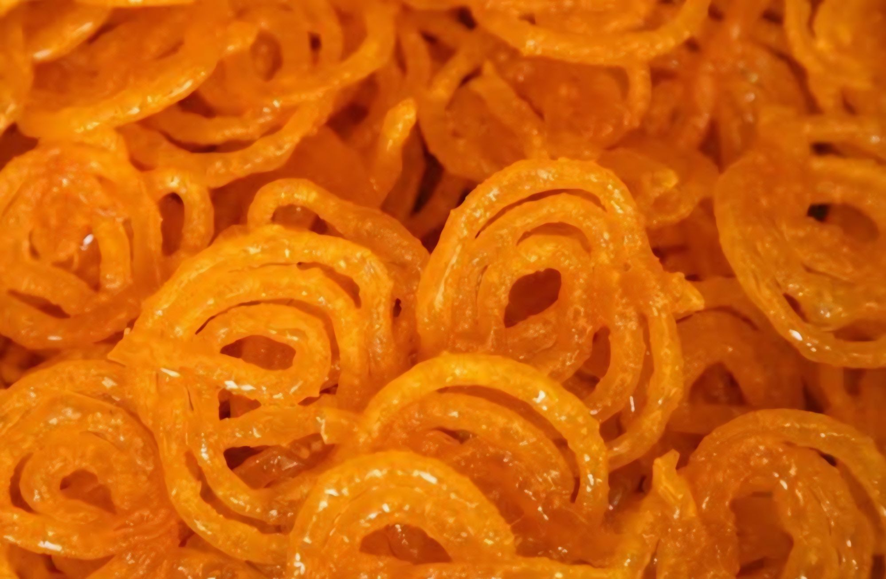

Ingredients:
- 1 cup all-purpose flour (maida)
- 2 tablespoons chickpea flour (besan)
- 1/4 teaspoon baking powder
- 1/4 teaspoon turmeric powder (for color)
- 1 cup sugar
- 1/2 cup water
- 1/4 teaspoon saffron strands (optional, for color and flavor)
- 1/2 teaspoon cardamom powder
- Oil or ghee for deep frying
|
 |